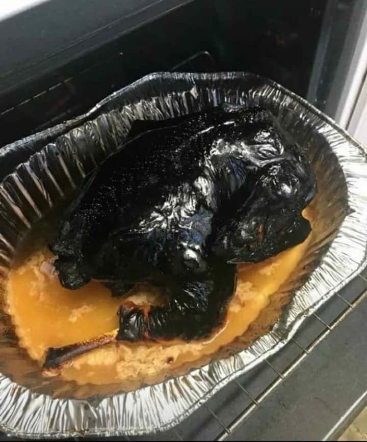

Savory Thanksgiving Turkey

Description
This dish is the centerpiece of any Thanksgiving meal. A beautifully basted turkey baked to perfection.
The tender meat and the crispy skin will have everyone coming back for more!
Ingredients
- Whole Turkey
- Chicken Broth
- Butter
- Salt and Pepper
Directions
How much you use of each ingredient doesn't matter. Larger portions = more flavor!
- Preheat the oven to 500°
- Place turkey in baking pan
- Pour chicken broth over turkey
- Microwave 2 sticks of butter until liquid
- Pour liquid butter over turkey
- Generously salt and pepper turkey
- Once oven is preheated, bake for 90 minutes
- Remove and let rest for 1 hour
- Enjoy!
Return to Main Page
Next Dish